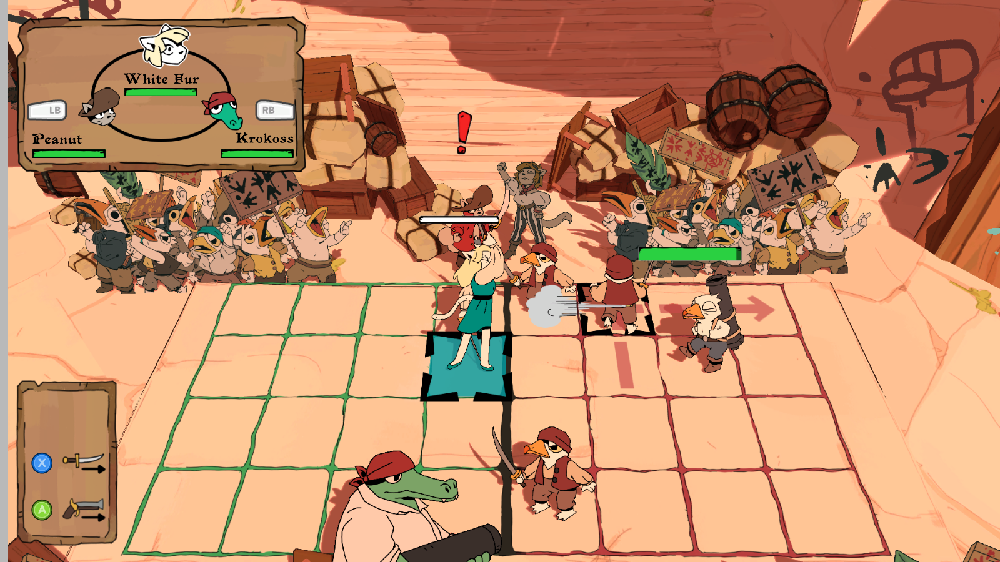
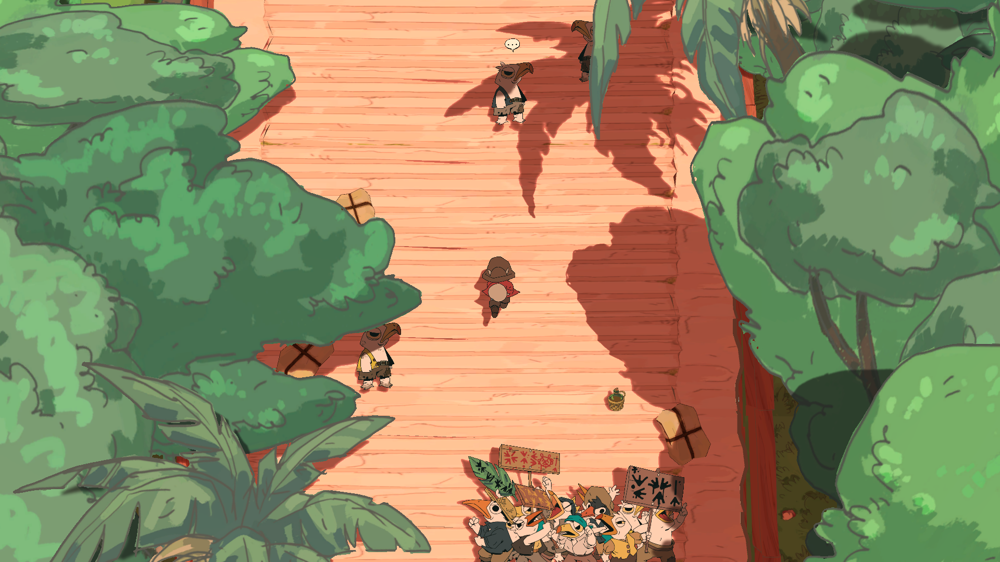

**Game Systems in Unity**
Original post date: 03.06.2022
Recently one of my first year student asked how he should implement game systems in Unity in particular with the goal of moving data from one scene to another. Instead of just answering him, I decided to write this blog post to detail my thoughts regarding Unity game systems by explaining how I use systems in Unity.
The actual question in more detail
===============================================================================
Here is a rough summary and translation of the actual question:
Often in Unity, we need objects that are common between scenes and devs tend to recommend to implement a GameManager (or a Sound Manager) and make them accessible everywhere with a Singleton or a Locator (or something similar to a Locator).
With a Locator, we have to put this System Object into every scene, however the instance does not persist.
During my search, I found this StackOverflow answer "[In every Unity project you must have A PRELOAD SCENE](https://stackoverflow.com/questions/35890932/unity-game-manager-script-works-only-one-time/35891919#35891919)" that recommends using this preload scene which initializes and owns all the game systems.
I also found this article: [UNITY TIP: DON’T USE YOUR FIRST SCENE FOR GLOBAL SCRIPT INITIALIZATION](https://low-scope.com/unity-tips-1-dont-use-your-first-scene-for-global-script-initialization/), that goes against the first article, but propose a script that loads the game systems before loading the scene.
Finally another example I found was a static class which would load the references in the scene with a constructor: [Design Advice: Power Up System (static variables?)](https://answers.unity.com/questions/663351/design-advice-power-up-system-static-variables.html?childToView=663681#answer-663681).
The short answer
===============================================================================
It depends on the game, but mostly, it depends on the game scene layout. It depends on the actual Game System, on its lifetime, what data needs to be shared with which other Game System. Not all Game Systems are the same and thus they require different approaches (no generic implementation will work in all cases). It also depends on the team who is working on the game. You will have more freedom to do what you prefer when you are the only programmer on the project (often my case), than when you are working in a team of programmers (often the case in reality).
This is my current approach when dealing with Game System.
Lifetime of a Game System
===============================================================================
Not all Game System needs to stay active during the whole duration of the game. Obviously, some do (for example Sound Manager, Music Manager, etc...). But most game system will actually not need to be instantiated and run active until the program ends.
Temporary Main Game System
-------------------------------------------------------------------------------
If I have to give an example, it would the battle system in Soup Raiders. When triggered, a new scene is added (Unity doc for [Additive Mode](https://docs.unity3d.com/ScriptReference/SceneManagement.LoadSceneMode.Additive.html)). When the battle is over, we simply destroy the overall battle system. A more global DemoManager (that will become an Island Manager in the released version, because it holds the game data of the specific island, again think game scene layout).

The center of the battle system is the GroundGameManager. It stores all the battle system required to run the battle (Battle Manager, Character Manager, Character UI, AI, etc...). The GroundGameManager inherits from GameManager that holds a static _instance attribute. When the battle is over, the GroundGameManager will be destroy with the overall battle scene, so there is no risk of a subsystem calling the null instance of the game manager.
~~~~~~~~~~~~~~~~~~~~~~~~~~~~~~~~~~~~~~~~~~~~~~~~~~
public class GroundGameManager : GameManager
{
//...
[SerializeField] private PlayerReadyBoxManager playerReadyBoxManager;
[SerializeField] private CharaBoxUiManager enemyBoxUiManager;
[SerializeField] private GroundCharacterManager charaManager;
//...
//Public static getter/setter
public static GroundGameManager Instance => (GroundGameManager) _instance;
public static GroundBattleManager BattleManager => Instance.battleManager;
public static GroundCharacterManager CharaManager => Instance.charaManager;
~~~~~~~~~~~~~~~~~~~~~~~~~~~~~~~~~~~~~~~~~~~~~~~~~~
When a battle is over, data are given to the DemoManager (rember IslandManager). For example, when you lose a main battle over boolean will be given to the Dialog System, such that when the player talks again with the trigger character, the DialogManager will react accordingly and give another dialog. Or when the player wins the battle, it will set the boolean of the DemoManager accordingly.
Interscene Game System
-------------------------------------------------------------------------------
Some game systems will have a longer duration that will stay alive between several scenes. The "DontDestroyOnLoad" attribute will be set to true. Like a temporary Game System, you can have a static instance reference, but it does not mean that the object needs to be a Singleton.

To showcase this type of Game System, we'll go deeper on how the DemoManager actually works between scene. Each of the three scenes of the Red Island (the docks, the palace entrance and the palace) have a DemoManager GameObject. When coming from one scene to another (for example from the docks to the palace entrance), the DemoManager from the next scene will check if there is already an instance, if it's the case, it will destroy itself, otherwise it will become the DemoManager.
The difference with the Singleton pattern is that the DemoManager gets destroyed when the player goes back to the title screen menu. In the final version, the DemoManager (that will become the RedIsland Manager inheriting from a Island Manager that manages exploring island) will be destroyed when going to the world map and gives its data to a World Manager.
Global Game System
--------------------------------------------------------------
In the last resort, when all the scenes and a lot of different systems depends on one system, it might be useful to have a Singleton. But it should never be the first choice, because it reduces flexibility between scenes. While some Game Systems will depend on your Singleton, your Singleton will depend on other systems as well and this is where it gets tricky. Does your Singleton depends of a system that is only correctly initialized in a certain scene. You will surely spend a lot going through this loading scene before going to your testing scene.
One case where I used a Singleton is the Music Manager. We are using FMOD on Soup Raiders, so when playing a sound or music, we simply give a string of the needed track. On the actual demo, the Music Manager simply switch between music tracks from one situation to another, so the MusicManager reflects this simple setup.
~~~~~~~~~~~~~~~~~~~~~~~~~~~~~~~~~~~~~~~~~~~~~~~~~~
public enum MusicTrack
{
MAIN_THEME,
BATTLE_THEME,
VICTORY_BOSS_THEME,
VICTORY_THEME,
DOCKS_THEME,
RED_BEARON_BOSS_BATTLE_1,
RED_BEARON_BOSS_BATTLE_2,
DUPONT_THEME,
NONE,
}
public class MusicManager : Singleton
{
private FMOD.Studio.EventInstance _musicInstance;
private MusicTrack currentTrack_ = MusicTrack.NONE;
private string _musicEvent;
public float MaxVolume = 1.0f;
private const string transitionParameter = "CurrentTrack";
//...
public void SwitchToNewTrack(MusicTrack newTrack)
{
//...
[CreateAssetMenu(fileName = "MusicManager", menuName = "Singleton/Music Manager Data")]
public class MusicManagerData : SingletonScriptableObject
{
[FMODUnity.EventRef] public string DocksTheme;
[FMODUnity.EventRef] public string BattleTheme;
[FMODUnity.EventRef] public string MainTheme;
//...
~~~~~~~~~~~~~~~~~~~~~~~~~~~~~~~~~~~~~~~~~~~~~~~~~~
In script, we ask the MusicManager to play a certain track (the first enum type, easier to deal with than actual string). The MusicManager will ask the MusicManagerData the actual string of the FMOD event. The MusicManagerData is a ScriptableObject that is in the Resource folder that will be loaded the moment we instantiate the MusicManagerData. The memory cost of keeping the list of string of all the music tracks is negligeable compare to the ease of use of simply calling SwitchToNewTrack
Bad implementations
==============================================================================
A bad implementation of a Game System can deeply extend testing time. For example, in Splash Blast Panic, I needed to go through the Main Menu everytime I needed to test a match (meaning, going through the title screen menu, character menu, level menu to finally a match).
The reason behind this bloat was a terrible implementation choice was the use of a MenuDataManager to pass data from the Menu to the Battle scene, that depended on the Main Menu. Typically all the menu systems had a line like this one in their Start function:
~~~~~~~~~~~~~~~~~~~~~~~~~~~~~~~~~~~~~~~~~~~~~~~~~~ cs
menuDataManager = GameObject.Find("GameData").GetComponent();
~~~~~~~~~~~~~~~~~~~~~~~~~~~~~~~~~~~~~~~~~~~~~~~~~~
It means there was a global "GameData" GameObject with DontDestroyOnLoad attribute set to true.
Things to keep in mind
==============================================================================
When designing any Game System, one should ask the following questions:
* Do I depend of another Game System in a certain scene. You know for sure that you will have to go through this scene, so try to avoid this situation.
* What is the lifetime of this Game System? If you only need it in a scene, don't make it "DontDestroyOnLoad", even if you want to copy data to the next scene. It will mean that your next scene will depend on the current scene. If you need to pass data, put them into a ScriptableObject and give them to a specific GameObject whose only task is to give the data to the next scene.
* Do I need to make this Game System a Singleton or even a (sort of) Locator with a static reference? Having different Game Systems having a global entry point can be error prone, especially when their lifetimes differ.
* Will the dependency with other Game Systems be clear to my colleagues? I mainly work alone as a programmer, so it's not a question that I often ask myself, but you have to have in mind that your Game System lifetime will have an effect on its dependency and nobody likes to get a NullRefException.
Conclusion
==============================================================================
There are several ways to define the lifetime and access to a Game System. I did not talk about the Preload scene, which I don't personaly recommend, however Alkemi Games use it in their way of using Unity, which is more programmer-oriented, here: [ADDON 2018 - Alkemi - Unity... but differently](https://docs.google.com/presentation/d/1YmG8Ou6UtnYnqihmx2fwgGktUmIJWU-tmV6xlsDLf5A/edit?usp=sharing). There is no correct way of implementing those, but your choice will affect game testing time if done badly. The most important is to use a good enough specialized implementation instead of a generic one for all the Game Systems and then have a bloated dependency graph of subsystems.